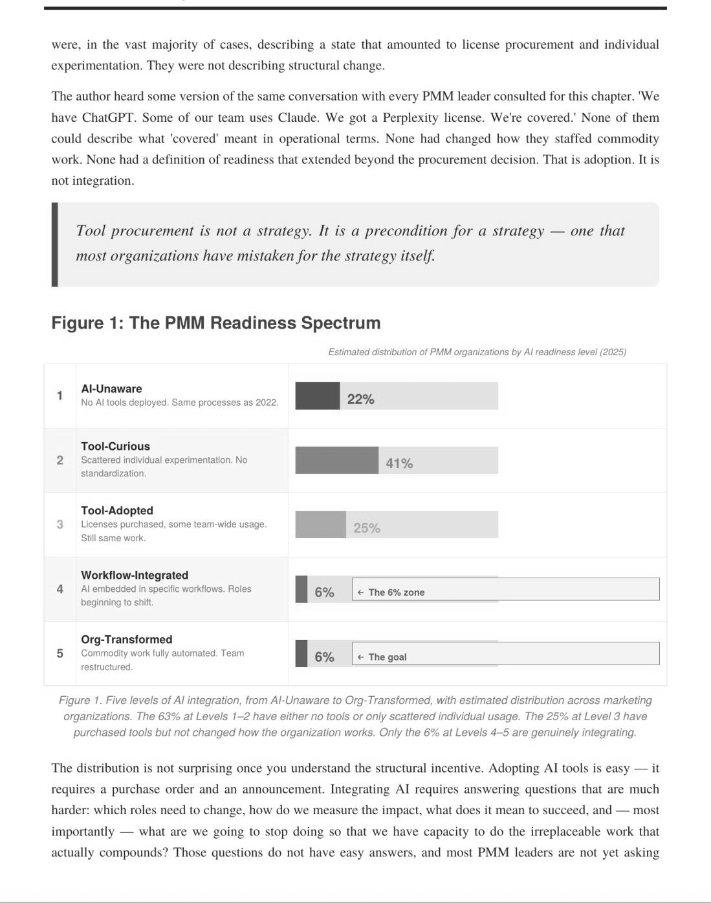
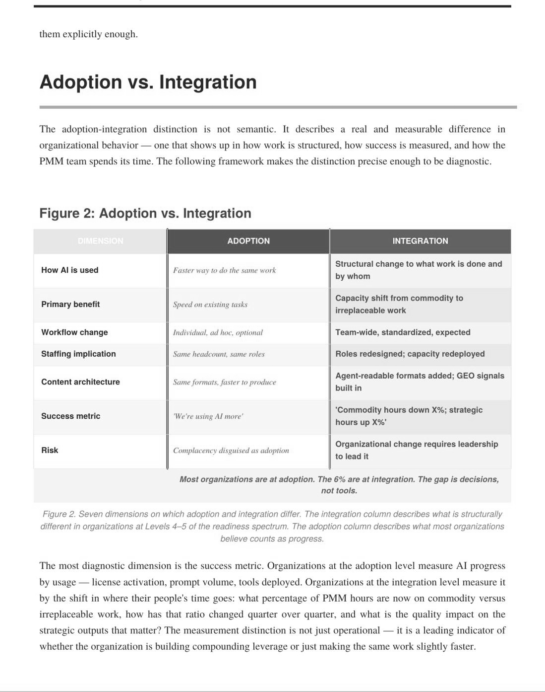
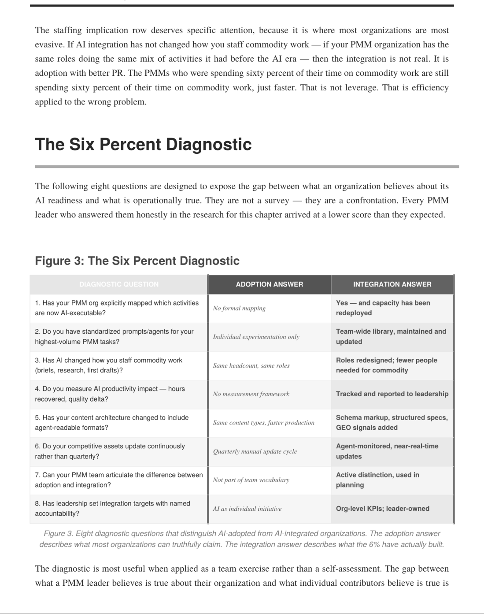
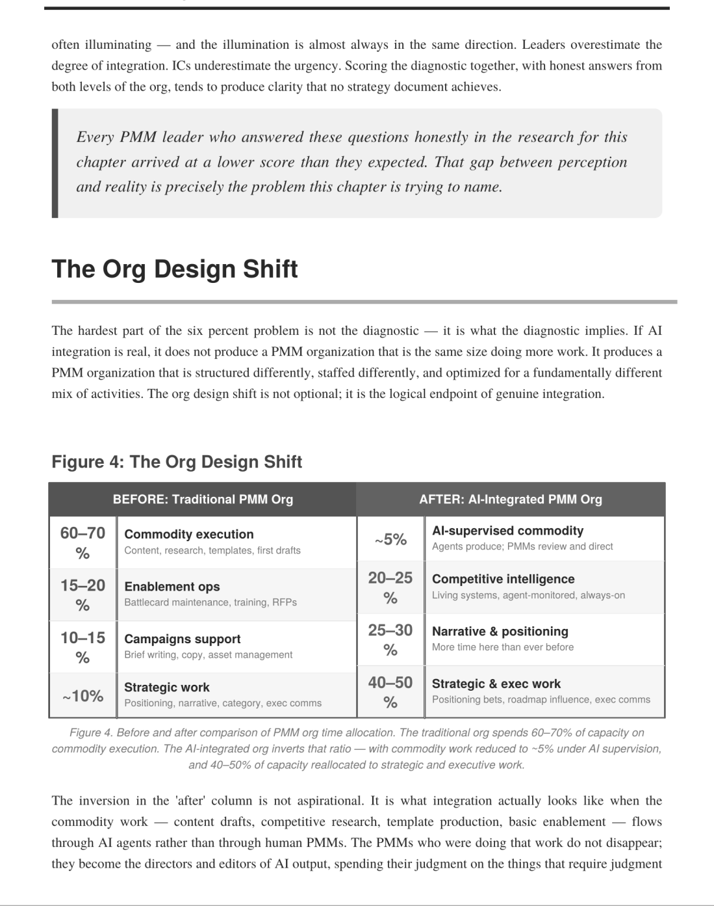

Chapter 13 Team Structure and Hiring for the Agentic Org Pragmatic Remix: All 37 Activities • Organizational Design • Talent Strategy
This chapter is different from the others, and we want to be transparent about why. For most of this book, we’ve been writing as practitioners—PMM leaders talking to PMMs about how to do the job better. This chapter leans more heavily on the executive view, because the questions it addresses—how to structure a team, who to hire, how to manage performance—are fundamentally organizational questions. They require the perspective of someone building and running a fifty-plus-person PMM team in real time, and that perspective shapes everything that follows.
The Org Chart Question Here’s a thought experiment that captures the organizational tension perfectly. In late 2025, we were looking at our org chart—fifty-three people across product marketing, competitive intelligence, pricing and commercialization, and research—and running a thought experiment that every CMO is quietly running: if I were building this team from scratch today, with full access to agentic tools, would it look like this?
The honest answer was no. Not because the people were wrong—the team was strong— but because the structure was optimized for a pre-agentic operating model. The team was organized by function: a competitive intelligence group, a content and messaging group, a technical marketing group, a pricing and commercialization group. Each function produced its own deliverables, maintained its own tools, and operated on its
own cadence. The structure made sense when the bottleneck was execution—when producing a competitive battlecard required a different skill set from producing a pricing analysis, and each required enough specialized effort to justify a dedicated team. In the agentic model, the bottleneck shifts from execution to strategy. The competitive battlecard and the pricing analysis are both produced by agents drawing from a shared knowledge base. The human work—the judgment about what the competitive landscape means for pricing, or what the pricing shift means for competitive positioning—cuts across functional boundaries. The functional structure doesn’t just feel inefficient; it actively prevents the cross-pollination of insight that makes the strategic work valuable.
From Role-Based to Outcome-Based The organizational shift we’re implementing at SAP—and that we think is directionally correct for most PMM teams—is from role-based teams to outcome-based teams. In a role-based structure, teams are organized around what they produce: the competitive team produces competitive content, the content team produces marketing content, the enablement team produces sales tools. Each team has a defined scope, clear deliverables, and specialized expertise. The advantage is clarity. The disadvantage is that the most important PMM work—the strategic synthesis that connects competitive intelligence to positioning to pricing to sales enablement—falls between teams rather than within them. In an outcome-based structure, teams are organized around what they achieve: a team owns pipeline generation for a specific product line, or competitive win rate for a specific segment, or analyst perception for the portfolio. Each team has the full spectrum of PMM capabilities—competitive, content, enablement, pricing—and the agent stack to execute across all of them. The team doesn’t produce battlecards and positioning documents as separate deliverables; it produces a coherent go-to-market narrative that manifests as battlecards, positioning, sales enablement, and content simultaneously, because the same intelligence and the same strategic framework inform all of them.
This isn’t just an org design preference. It’s a response to the reality that agentic tools make cross-functional execution possible for small teams in a way that it wasn’t before. A team of three PMMs with a coherent agent stack can cover competitive intelligence, positioning, enablement, and content for a product line—work that previously required six to eight specialized roles—because the agents handle the execution while the humans handle the strategy and judgment. The team is smaller not because the work went away but because the leverage per person increased.
The Full-Stack PMM The individual contributor who thrives in the outcome-based model is what we’ve been calling the full-stack PMM—someone who combines strategic depth, agent orchestration capability, and execution judgment across the full scope of PMM activities.
This is a different profile from the specialist PMM who has historically been the ideal hire. The specialist—the competitive intelligence expert, the pricing analyst, the content strategist—was valuable because their deep expertise in one area produced higherquality deliverables than a generalist could. In the agentic era, the agent handles much of the specialized execution, and the human’s value comes from connecting insights
across domains. The PMM who can see the thread from a competitive pricing shift to a positioning opportunity to a sales enablement need to an analyst briefing talking point— and who can direct agents to execute across all four—is more valuable than four specialists each seeing their piece of the picture. We don’t want to overclaim here. There are still roles where deep specialization matters—particularly in pricing and commercialization, where the analytical complexity requires genuine expertise, and in analyst relations, where relationship depth takes years to build. But for the majority of PMM roles—the people who own a product line’s go-to-market—the full-stack profile is where the market is heading.
Hiring for the Agentic Era If you’re hiring PMMs—or if you’re a PMM thinking about how to position yourself in the market—here’s what the evaluation criteria look like. Systems thinking matters more than deliverable experience. The question isn’t “have you produced a competitive battlecard?” It’s “have you designed a competitive
intelligence workflow?” The shift from artifact to system is the defining move of the agentic era, and PMMs who think in systems—inputs, processes, outputs, feedback loops—will navigate it better than PMMs who think in deliverables. Intellectual curiosity matters more than tool proficiency. The tools are going to change. Claude today won’t be Claude in two years. The platforms from Chapter 11 will consolidate, evolve, or be replaced. What endures is the disposition to experiment, to learn new tools quickly, to build workflows iteratively, and to be honest about what’s working and what isn’t. The PMM who has tried six tools and has an informed opinion about each is a better hire than the PMM who has mastered one tool and never looked at the others. Communication range matters more than communication polish. The agentic era PMM needs to communicate with product engineers about data architecture, with sales reps about deal strategy, with analysts about market evaluation, with executives about business performance, and with agents about task execution. Each audience requires a different register. The PMM who can code-switch across these audiences—who can be technical with engineers and narrative with executives without sounding fake in either context—has a communication range that’s more valuable than flawless copywriting. Adaptability matters more than pedigree. The best predictor of success in the agentic era isn’t whether someone has a Pragmatic certification or ten years of PMM experience. It’s whether they’ve demonstrated the ability to adapt when the rules changed. Did they learn new skills when their company shifted from on-prem to cloud? Did they evolve their approach when their market shifted from enterprise to mid-market? Did they experiment with AI tools before being told to? The pattern of adaptation is what you’re hiring for, because the rules are about to change again.
The Performance Measurement Problem One of the hardest management challenges in the agentic era is measuring PMM performance when the traditional output metrics—number of battlecards produced, content pieces published, launches executed—become meaningless. If an agent produces the battlecard, what did the PMM contribute?
We’ve talked about this extensively, and we think the answer is to shift from output metrics to impact metrics. Output metrics measure what was produced. Impact metrics measure what changed as a result. Did the competitive win rate improve? Did the sales cycle shorten? Did the analyst move us up in the evaluation? Did the pricing change increase deal size? Did the launch shift the market narrative? Impact metrics are harder to measure and harder to attribute. They require longer time horizons and more tolerance for ambiguity. But they’re the metrics that actually matter—the ones that tell you whether the PMM is creating strategic value rather than just producing artifacts. And in the agentic era, where artifact production is cheap, strategic value is the only defensible basis for headcount. The practical approach: define two to three impact metrics for each PMM role at the beginning of the quarter. Competitive PMM: win rate in competitive deals and timefrom-signal-to-sales-response. Launch PMM: pipeline generated from launch activities and analyst sentiment shift. Pricing PMM: deal size growth and pricing-related win/loss trends. These are imperfect metrics—influenced by factors beyond the PMM’s control— but they point the team toward the right kind of work, which is the point of measurement.




The organizational questions this chapter raises are the ones that should keep every CMO productively restless—because the team structure decisions made in the next twelve months will determine organizational effectiveness for the next five years. What we’re seeing work: moving from a purely functional structure to a hybrid that maintains centers of excellence for deep specialization (pricing, analyst relations) while reorganizing the rest around product-line outcomes. Each product line gets a small team of two to four PMMs who own the full go-to-market, supported by shared CoEs and the agent infrastructure the team builds. On headcount: we are not using agentic tools to cut staff. We’re using them to reallocate time from low-value execution to high-value strategy. The PMMs who used to spend sixty percent of their time producing artifacts now spend sixty percent on competitive analysis, customer insight, positioning refinement, and stakeholder navigation. Output quality went up. Strategic impact went up. And the ability to justify investment went up, because PMM activity now connects to pipeline and revenue metrics that leadership cares about. On hiring: we now include a “work with AI” exercise, we’ve deprioritized portfolio reviews in favor of strategic decision stories, and we’ve made customer interaction experience a hard requirement. The framing that captures it: we’re hiring architects, not builders. Agents handle the building. We need people who understand the full system. KEY TAKEAWAYS
• Hybrid team structures—centers of excellence for deep specialization plus product-line outcome teams—are emerging as the model. • Agentic tools should reallocate time from execution to strategy, not reduce headcount. • New hiring signals: “work with AI” exercises, strategic decision narratives over portfolio reviews, and mandatory customer experience. • The organizing metaphor: hire architects who understand the full system, not builders. Agents handle the building.